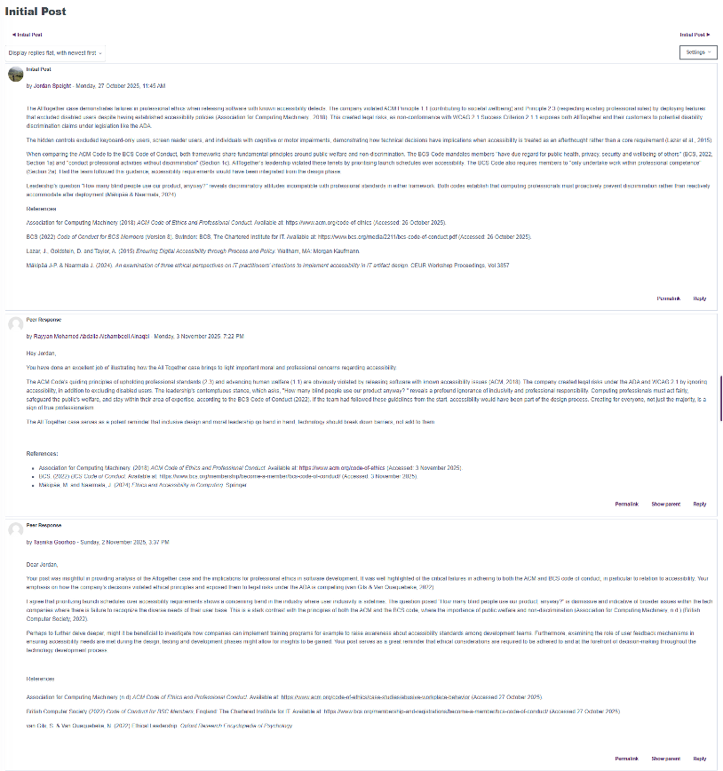
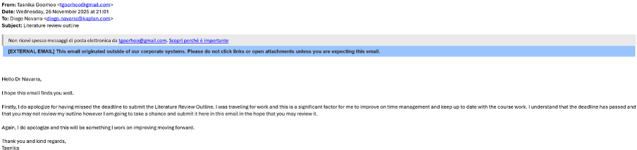
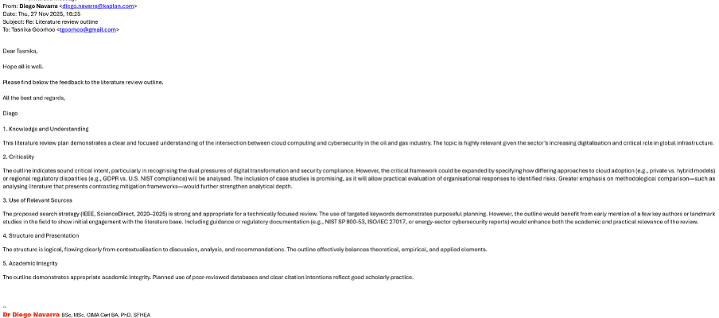

A Reflective Piece
Introduction
This reflection summarizes my journey through the Research Methods and Professional Practice module and highlights the development of skills obtained. The module required me to engage with the material and research as a practical activity rather than an abstract exercise: evaluating literature critically, selecting and justifying a methodology, application of statistical analysis and creating a research proposal (University of Essex, 2026). I faced challenges and opportunities.
I work in the energy industry with large datasets, report writing requirements and research opportunities; knowledge and skills such as research competencies and critically evaluate literature are important for integrity and providing accurate insights. This was a personal motivation to undertake this module.
I used the Rolfe et al. (2001) model to note my module journey via three questions: What? So what? Now what? This approach allowed me to explore and critically reflect on my learnings, growth, future opportunities (University of Wollongong Australia, 2023). The aim is to document my journey through the module, capture challenges, growth, skills learnt and indicate how my plan to use these insights moving forward.
Exploratory Areas
Technical skills
The module strengthened my technical skills through statistical analysis and interpretation. By working through the exercises, I slowed down and focused on reasoning: thinking about what the data type is and what conclusions are justified. Assignment one enhanced my critical evaluation and research and writing skills through the literature review. The second assignment, I practiced research design. The third assignment ensured I met all requirements for the e-Portfolio. Working through critically evaluating literature and writing skills was daunting as first. I approached it by working through research papers with patience, self-awareness and self-regulation (Harvard DCE Professional & Executive Development, 2019).
Challenges
The first challenge was managing the uncertainty. The other modules had a clearer process: run the code, the model improves, basis of the report. This module, uncertainty is part of the process: choosing the appropriate research question, evaluating research and identifying limitations. I felt stress and perfectionism tendencies: spending too long trying to find the 'right' question and getting stuck in reading. I recognized I needed to move into action and a 'workable' state rather than 'ideal'. There was also a balance of breadth and depth needed. I felt stretched by several learning outcomes. The turning point was realising that mastery was not the goal but rather evidence of growth and critical thinking. I moved through the units with more ease and curiosity. Lastly, time management was tested. I needed to balance other parts of my life and ensure sufficient engagement with the material. This required me to schedule time for the module and start the assignments ahead of time (Auld, 2019). Changing the perspective on the challenges was important in fostering a growth mindset, adaptability and resilience (SkipPrichard, 2024).
Teamwork and collaboration
The collaborative discussions were valuable in helping me understand other perspectives (Figure 1). I was able to practice skills like communication, integrity and respect. During the seminars I attended live, I engaged to discuss the material and ask questions. I learned that collaboration in research is not just about agreement but also having ideas tested. I initially experienced discomfort in feedback. I saw a shift when I started approaching collaboration as improvement to the quality of work. By the second discussion, I was more deliberate about how I respond to the peer responses. This helped with my development, enhancing productivity and self-esteem (Laal & Ghodsi, 2012).

Problem-solving and critical thinking
I strengthened my ability to problem-solve and critically think. The feedback from the tutor on the literature review and the research proposal outlines aided in ensuring my critical thinking and analysis was on the right path (Figure 2). Considering perspectives and concepts, noting security around data and real-world situations needed me to explore potential problems that may arise and potential solutions. Another example was refining the scope of my research question and aims for the research proposal assignment, taking the tutor feedback into consideration. Through the literature review, I became more attentive to issues like sample bias, gaps and limitations. I moved from 'this paper says x' to 'this paper suggest x under y conditions and may not be true in z circumstances.'


Professional skills
I was able to improve important professional skills such as effective communication, time management, critical writing and others mentioned in the skill matrix table section. These were important to successfully submit the assignments, complete the collaborative discussions and improve for future tasks in my career (Sparks, et al., 2014). The word count/time limit for the assignments needed me to succinctly articulate my ideas, allowing me to improve my confidence and skill in effectively conveying information. Understanding the ethical, regulatory and commercial awareness made me conscientious of how research can contribute to wider parts of industry and the world. This reinforced the need for integrity, trust and transparency as a professional working with data and research.
Subject and social application
The assignments enabled me to apply real-world research, which reinforced my understanding of the module's concepts in application. The literature review gave me a lens to view other research that has been carried out in industry. As an energy professional, it gave me a deeper insight into how AI/AGI and cybersecurity is impacting the industry. Additionally, it increased my confidence in communicating how research can be applied.
Leadership
During this module I showed up with leadership in taking ownership of learning journey, responding respectively to peers in the collaborative discussions and ensuring integrity with all the work I do. I was also confident during seminars asking questions and reaching out to the tutor. I also recognize that effective leadership is being open to constructive feedback, which I received from peers in the discussions and the tutor in the assignment outline submissions. Furthermore, within this industry, ensuring ethical, transparent and true use of data, is showing up with leadership skills.
Future Application
My goal is to apply these knowledge and skills in my current workplace, in future learnings and projects and the Masters degree I undertake. As my job entails large datasets of sensitive information, applying these skills will be crucial in aiding my team, clients and future projects. The research concepts and critical writing will help me analyse results and report on them effectively. I will also treat ethics and compliance as design inputs into projects ensuring these are clear and suffice for the data being worked with. I will use the e-Portfolio to document and track progress along with showcasing my development as indicated in the action plan section.
References
Auld, S. (2019) Time management skills that improve student learning. Available at: https://www.acc.edu.au/blog/time-management-skills-student-learning/#:~:text=You%20could%20start%20by%20estimating,make%20reading%20the%20schedule%20easier (Accessed 24 January 2026).
Harvard DCE Professional & Executive Development. (2019) How to Improve Your Emotional Intelligence. Available at: https://professional.dce.harvard.edu/blog/how-to-improve-your-emotional-intelligence/ (Accessed 24 January 2026).
Laal, M. & Ghodsi, S. M. (2012) Benefits of collaborative learning. Procedia - Social and Behavioral Sciences, Volume 31, pp. 486-490. DOI: https://doi.org/10.1016/j.sbspro.2011.12.091.
SkipPrichard (2024) How to set boundaries at work (and why it's important). Available at: https://skipprichard.com/how-to-set-boundaries-at-work-and-why-its-important/ (Accessed 24 January 2026).
Sparks, J. R., Liu, O. . L., Song, Y. & Brantley, W. (2014) Assessing Written Communication in Higher Education: Review and Recommendations for Next-Generation Assessment. ETS Research Report Series, 2014(2), pp. 1-52. DOI: https://doi.org/10.1002/ets2.12035.
University of Essex (2025) Research Methods and Professional Practice October 2025 B. Available at: https://www.my-course.co.uk/course/view.php?id=14232§ion=0 (Accessed 25 January 2026).
University of Wollongong Australia (2023) Model of reflection: The Rolfe et al. model. Available at: https://ltc.uow.edu.au/hub/article/rolfe-et-al-model (Accessed 25 January 2026).